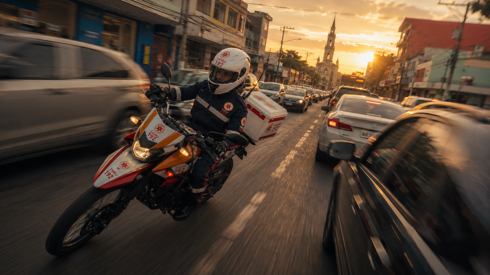

Imagem ilustrativa
O que está em jogo
Cada minuto de frota parada é um paciente esperando mais tempo por socorro.
Hoje Avaré tem uma única ambulância em condições de rodar, sem reserva, e declara R$ 491 mil por mês num custo que ainda é parcial. Neste cenário, a Prefeitura contrata diretamente a Samais para operar a execução do seu SAMU: uma ambulância 24 horas, outra no horário de pico, reserva reativada, motolância e uma equipe enxuta e profissional de ~20 pessoas — dimensionada pela demanda real da cidade. A central regional de chamados e a UTI móvel regional continuam no papel delas. É o caminho de implantação mais rápida: sem criar consórcio, direto pela Lei de Licitações, praticamente pelo valor que a cidade já gasta.
Neste cenário, Avaré contrata diretamente a Samais para operar a execução do seu SAMU — frota, UTI móvel e equipe. A central regional de chamados, que já fica na cidade, continua recebendo o 192 e regulando. É a divisão mais simples: a cidade cuida do que roda na rua; a regulação segue como está.
Uma ambulância 24 horas, outra no horário de pico (quando a demanda dobra), reserva reativada por laudo técnico e motolância — operadas por ~20 profissionais contratados, o mesmo porte da equipe atual, agora com gestão, manutenção e treinamento dedicados.
O 192 continua sendo atendido pela central regional — que fica dentro de Avaré e é habilitada pelo Ministério da Saúde — e a UTI móvel regional segue cobrindo os casos graves, como a norma do SUS prevê para cidades deste porte. A Samais integra o despacho local com tecnologia e rastreamento em tempo real.
Só Avaré declara R$ 491 mil por mês com o SAMU — e esse número já é parcial: manutenção na frota geral da Prefeitura, combustível na garagem municipal, médicos do município cedidos à central e à UTI móvel, insumos no almoxarifado compartilhado. Cada cidade do bloco carrega pedaços de custo que não aparecem somados. O resultado é uma operação que parece barata no papel e roda no limite na rua.
A estrutura regional que atende Avaré hoje cobre 17 cidades com uma única UTI móvel, ambulâncias paradas e equipes cobrindo buracos de escala. Não é má vontade — é uma conta que não fecha para quem precisa do socorro perto.
Manutenção na frota geral, combustível na garagem municipal, médicos cedidos, insumos no almoxarifado compartilhado. E um serviço de urgência disputando fila de oficina com carros comuns — quando ambulância parada significa cidade descoberta.
A cidade contrata diretamente a operação do seu SAMU: ambulância 24h + ambulância no pico + reserva + motolância, com equipe enxuta e profissional — em um único contrato com custo aberto, praticamente pelo valor que a cidade já gasta hoje.
Na base de Avaré, das três ambulâncias, só uma está em condições de rodar — sem reserva. A UTI móvel é única para as 17 cidades. E o custo parece menor do que é porque está fragmentado: cada pedaço vive numa pasta diferente do orçamento.
| Unidade | Ano / modelo | Situação |
|---|---|---|
| USB 01 | 2012 · Peugeot Boxer | Parada |
| USB 02 | 2015 · Renault Master | Parada |
| USB 03 | 2024 · Renault Master | Operante |
| USA regional | Suporte avançado | Única para os 17 municípios |
| Regime de escala | 12×36 | Combustível 349,8 litros/mês |
Das três USB declaradas, apenas a Renault Master 2024 está operante. As de 2012 e 2015 estão paradas. Quando a única viatura está empenhada, Avaré fica sem cobertura própria de suporte básico.
A base reúne condutores socorristas, técnicos de enfermagem, enfermeiro, auxiliares de serviços gerais, técnica auxiliar de RM e um coordenador cedido — em escala 12×36.
A USB de Avaré realiza em média 152 atendimentos por mês (faixa 131–168). No período de referência, o perfil foi de maioria clínica, seguido de trauma, psiquiátrico e obstétrico.
| Equipe da base | Quantidade | Observação |
|---|---|---|
| Condutores socorristas | 6 | Escala 12×36 |
| Técnicos de enfermagem | 5 | Assistência direta |
| Enfermeiro | 1 | Carga de 30h |
| Auxiliares de serviços gerais | 2 | Apoio |
| Técnica auxiliar de RM | 1 | Apoio administrativo |
| Coordenador de base | 1 | Servidor cedido |
| Total na base | 16 | Obstétricas no período: 38 |
A fragilidade da operação atual aparece onde mais importa: na hora de chegar ao paciente grave. Frota insuficiente, suporte avançado único e falhas de regulação se somam — com um óbito já documentado pela própria Secretaria de Saúde.
Com uma única viatura operante e sem reserva, quando a USB de Avaré é empenhada o município fica sem cobertura própria de suporte básico até que ela se libere.
Um só suporte avançado para 17 municípios e 312 mil habitantes. Cada acionamento grave depende da disponibilidade dessa única unidade — impacto direto no tempo-resposta.
Com uma UTI móvel única e frota mínima, a central é forçada a escolhas impossíveis: casos graves sem viatura para liberar, com óbito já documentado pela SMS de Avaré. Não é falha das pessoas — é falta de estrutura.
| Custo oculto | Onde está hoje | Na proposta Samais |
|---|---|---|
| Manutenção da frota | Na fila da "frota geral" do município, junto com carros comuns | Oficina e fila dedicadas — urgência não espera |
| Combustível | Garagem da Prefeitura, sem conta separada | Linha própria, para a frota completa rodando |
| Médicos da central e da UTI móvel | Efetivos de Avaré cedidos + contratações avulsas do consórcio | Equipe médica própria, contratada e fixa |
| Insumos | Almoxarifado Central da saúde, compartilhado | Almoxarifado dedicado ao SAMU |
| Imóvel da central e da base | Água, luz, IPTU e manutenção pela Prefeitura | Permanece com o poder público (sem custo novo) |
| Coordenação | Servidor cedido, em outra pasta | Coordenação própria, dentro do contrato |
| Passivo trabalhista | TAC firmado com o MPT | Equipe 100% CLT elimina a causa do risco |
Uma proposta única, dimensionada pela demanda real de Avaré: a ambulância principal 24 horas, uma segunda no horário de pico, a reserva reativada, motolância e o despacho local com tecnologia — integrado à central regional que segue regulando, com a UTI móvel regional cobrindo os casos graves como a norma prevê. A cidade manda; a Samais opera.
Condutores socorristas, técnicos de enfermagem e enfermeiro supervisor — contratados, treinados e fixados, com a escala coberta de verdade e treinamento contínuo (cursos e workshops) como compromisso de contrato.
As viaturas paradas passam por laudo técnico e voltam a rodar. Ambulância principal 24 horas, segunda ambulância no horário de pico, reserva e motolância — com manutenção, combustível e insumos dedicados, fora da fila geral da Prefeitura.
Cada chamado e cada viatura rastreados em tempo real com o CoPilot, integrado à central regional — despacho otimizado, prontuário digital e painel aberto para a Prefeitura e a Secretaria de Saúde.


O valor abaixo é o total da execução municipal — sem rubricas escondidas e sem custos espalhados pelas pastas da Prefeitura. A verba federal vinculada às unidades de Avaré segue abatendo a conta municipal. Números de referência, a calibrar na diligência.
| Comparação honesta | Hoje | Com a proposta |
|---|---|---|
| Ambulâncias de Avaré em condições de rodar | 1 (sem reserva) | 2 + 1 reserva + motolância |
| UTI móvel | 1 dividida com 17 cidades | regional segue cobrindo (norma do SUS para este porte) |
| Cobertura no descanso da equipe | viatura para | coberta |
| Manutenção e insumos | fila geral da Prefeitura | dedicados ao SAMU |
| Custo visível | R$ 491 mil (parcial) | R$ 500 mil (completo) |
A diferença está em entregar a operação funcionando, com custo aberto e conformidade plena — não um relatório. Cada diferencial responde a um ponto crítico da operação que Avaré vive hoje.
A Samais opera o serviço, não vende consultoria. O custo é aberto linha a linha, sem rubricas escondidas — o gestor enxerga cada item do que paga.
Regulação, despacho e telemetria em plataforma própria, com rastreabilidade em tempo real — atacando diretamente as falhas de regulação que hoje custam vidas.
Equipe CLT no piso, com fim dos passivos trabalhistas, e Núcleo de Educação Permanente estruturado (NR-32, SAVC). Autonomia municipal sobre o próprio serviço.
A Prefeitura decide pela municipalização da execução — reunião técnica com a SMS para fechar escopo e dados finais (frota, demanda, folha).
Contratação direta pela Prefeitura — licitação ou instrumento cabível, com termo de referência apoiado no estudo técnico e nos parâmetros nacionais.
As unidades de Avaré passam para gestão municipal junto ao Ministério da Saúde, mantendo a verba federal. A Samais conduz a papelada junto.
Laudo e reativação das viaturas, contratação e treinamento da equipe, início por fases — o serviço não para um dia sequer durante a transição.
A frota inteira rodando, a equipe inteira na escala — e o socorro chegando a tempo.
Frota inteira rodando com reserva, motolância, equipe profissional e um único contrato com o custo todo aberto — o caminho mais rápido, calibrado ao dado real do município em diligência de campo.